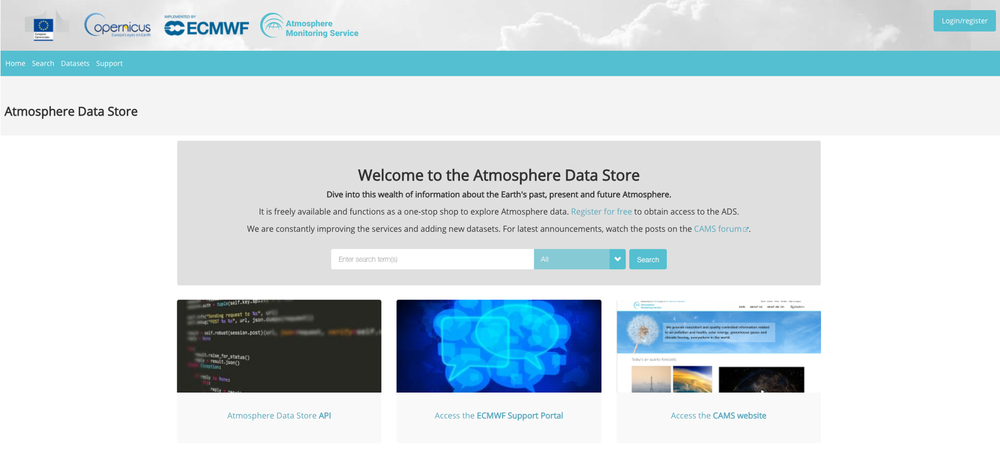
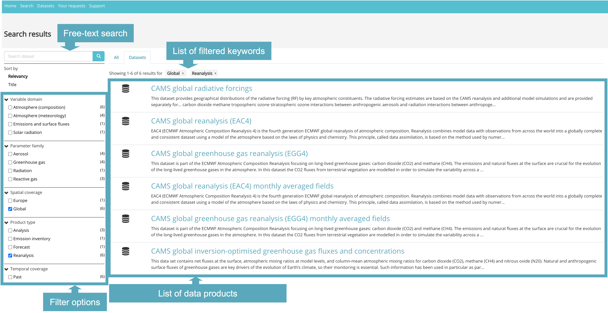
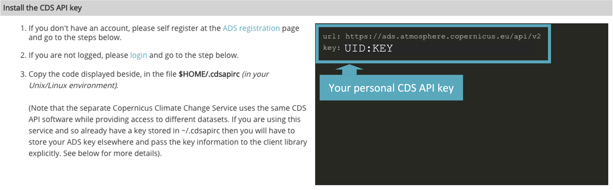
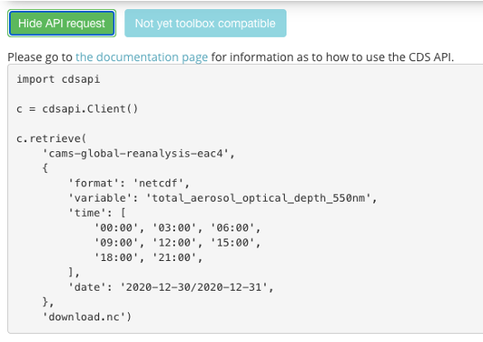

Atmosphere Data Store (ADS) Tutorial#
The Copernicus Atmosphere Data Store (ADS) is the data access portal of the Copernicus Atmosphere Monitoring Service (CAMS) and offers access to data about the Earth's past, present and future atmosphere. You can find more information in the Atmosphere Data Store (ADS) documentation.
In this notebook, you will find an overview of the type of data that can be found in it and practical examples on how to access and retrieve this data.

Learning objectives ü߆#
Understanding the purpose and functionality of the ADS.
Learning to access data interactively via the web interface: familiarizing with the process of browsing datasets, selecting data, and submitting download forms via the ADS web interface.
Learning to access data programmatically using the ADS API: acquiring knowledge on installing the ADS API, obtaining API keys, and making data retrieval requests.
Target audience üéØ#
Anyone interested in accessing and retrieving data from the Copernicus Atmosphere Data Store (ADS) either interactively via the ADS web interface or programmatically through the ADS API.
Prerequisites and assumed knowledge üîç#
Basic Programming Skills: Familiarity with programming concepts, particularly in Python, is assumed, as the tutorial involves using Python libraries like cdsapi for accessing data programmatically.
Familiarity with API Usage: Understanding of Application Programming Interfaces (APIs) and how to use them to interact with web services will be helpful, particularly for accessing data programmatically through the CDS API.
Difficulty
1/5
Run the tutorial
WEKEO
WEkEO serves as the official platform of the European Centre for Medium-Range Weather Forecasts (ECMWF), offering access to an extensive array of climate data and tools for analysis and visualization. It provides a robust environment for conducting in-depth analysis and exploration of climate-related datasets. To learn more about WEkEO and its offerings, visit their website.
Possible Cloud Services
While Kaggle, Binder, and Colab are popular options for running notebooks in the cloud, it’s essential to note that these are just a few among many available choices. Each platform has its unique features and capabilities, catering to diverse user needs and preferences.
Kaggle |
Binder |
Colab |
|---|---|---|
|
|
|

Outline#
Data retrieval
Access data interactively via the ADS web interface
Access data programmatically with the CDS API
Further resources
1. Data retrieval#
All Copernicus Atmosphere Data Store (ADS) data is public and you can have free access to it. Before being able to download data, you must self-register at the ADS registration page (if you do not have an account yet), log in to the ADS portal and accept the Terms and Conditions.
You will be able to browse the ADS web interface without beging logged in, but you have to login for being able to download data.
After being logged in and having accepted the terms, there are two ways to access data from the ADS:
Interactively via the ADS web interface, or
Programmatically with the CDS API
1.A. Access data interactively via the ADS web interface#
The ADS web interface allows you to interactively browse, select and download data products offered by the ADS. First, under Datasets, you can browse and select the data you are interested in. In a second step, you can specify details of the data download form you wish to submit.
Filter and select a dataset#
In a first step, you can browse and filter the datasets you are interested in. The Datasets interface allows you either to select data based on different categories, e.g. Product type, Variable domain, Spatial / Temporal coverage, but also offers a free text search. The list of datasets in the main window allows you to select the dataset you are interested in.

Once you selected a dataset, you then get redirected to a data description section, which provides you an overview of the chosen dataset. Under Download data, you have the option to specify the dataset you would like to download and to submit the download form.
Submit the Download data form#
Data Description Section
The Data description section (see 1 in the image below) provides you an overview of the dataset, including a list of variables that are available. Under the tab Download data, the "Download data" form opens (see 2), which allows you to interactively filter the dataset based on specific keywords, such as:
Product typeVariableYear / Month / TimeGeographical areaFormat
At this point, you must accept the Terms of use of Copernicus products. Then, at the end of the "Download data" form, you get two options to select: Show API request and Submit Form. If you want to download the data interactively, the data requests will be executed as soon as you click on the Submit Form button.
You will need the Show API request if you want to request data programmatically. See Section 1.B for further information.
Under the tab
Your requests in the main menu, you can monitor the status of your data requests.
1.B Access data programmatically with the CDS API#
The CDS Application Program Interface (CDS API) is a Python library which allows you to access data from the ADS programmatically. The library is available for both Python versions, Python 2.7.x and Python 3, but we recommend to use the library under Python 3. In order to use the CDS API, follow the steps below:
Install the CDS API key#
After Loging in to the ADS portal, go to the api-how-to page
Copy the CDS API key displayed in the black terminal window in a file under
$HOME/.cdsapirc
Note: You find your CDS API key displayed in the black terminal box under the section Install the CDS API key. If you do not see a URL or key appear in the black terminal box, please refresh your browser tab.

The code below creates the file under your current working directory. Make sure to replace the ################ with your personal CDS API key.
%%writefile ./.adsapirc
url: https://ads.atmosphere.copernicus.eu/api/v2
key: ################################
The Copernicus Climate Change Service (C3S) uses the same CDS API software, but provides access to different datasets. If you are accessing data also from the Copernicus Climate Data Store and you already have a
~/.cdsapirc file created, then you have to store your ADS key elsewhere. You can e.g. store your ADS key under
./.adsapirc and you can pass the key information to the client library explicitly. See the code cell below how to do this. import cdsapi
import yaml
with open ('./.adsapirc', 'r') as f:
credentials= yaml.safe_load(f)
c = cdsapi.Client(url=credentials['url'], key=credentials['key'])
Alternative: Set CDS API credentials manually#
Alternatively, you can also define variables for url and key. These variables can then be set when you define the cdsapi.Client(url=URL, key=KEY) (just follow the notebook, you’ll get there).
Please note: in the workflow notebooks, we will use this modality and set manually the CDS API key information for the data retrievals.
URL = 'https://ads.atmosphere.copernicus.eu/api/v2'
KEY = '############################'
Install the CDS API client#
The next step is to install the CDS API client. You can do this with the package management system pip.
!pip install cdsapi
Use the CDS API client for data access#
Once the CDS API is installed, it can be used to request data from the Atmosphere Data Store.
At the end of the "Download data" form addressed in the section 1.A, you get two options to select: Show API request and Submit Form. If you want to access data programatically, you must choose Show API request. By doing so, the API request appears, which you can then copy. Below, you can see the data retrievalrequest generated by the search made in section 1.A.

To make your search, you must paste the API request into your code and make these two changes:
Add the url and key variables that you defined earlier to the cdsapi.Client(), so that it is read cdsapi.Client(url=URL, key=KEY); and
Define the name of the file you will download, by substituting ‘download.nc’ (in the last line of the
API request) with the name of your choice.
You can also change your search now by adding/removing variables or changing other aspects of the data, as in the following example.
Example: CAMS global atmospheric composition forecasts - Organic matter aerosol optical depth at 550 nm#
Data used in Fire Monitoring* case study
CDS API name: cams-global-atmospheric-composition-forecasts
Variable:
organic_matter_aerosol_optical_depth_550nmDate:
2021-08-01/2021-08-08Time:
00:00Leadtime hour:
[0, 6, 12, 18, 24, 30, 36, 42, 48]Type:
forecastArea:
[80, -150, 25, -50]Format:
netcdf_zip
import cdsapi
c = cdsapi.Client(url=URL, key=KEY)
c.retrieve(
'cams-global-atmospheric-composition-forecasts',
{
'date': '2021-08-01/2021-08-08',
'type': 'forecast',
'format': 'netcdf_zip',
'variable': 'organic_matter_aerosol_optical_depth_550nm',
'time': '00:00',
'leadtime_hour': [
'0', '12', '18',
'6',
],
'area': [
80, -150, 25,
-50,
],
},
'./2021-08_NAmerica_organicMatterAOD.zip')
For data originating from ECMWF's Meteorological and Archival System (MARS), data is stored on a grid with longitudes from 0 to 360 degrees. It can be reprojected to a regular geographic latitude-longitude grid, by setting the keyword argument
area and grid. Per default, data is retrieved in GRIB. If you wish to retrieve the data in netCDF, you have to specify it by using the keyword argument format.1.C. Further resources#
Key Messages to Take Home üìå#
The Copernicus Atmosphere Data Store (ADS) offers a robust platform for accessing and retrieving a wide range of atmospheric data.
The climate data available through the Copernicus Atmosphere Data Store (ADS) can be accessed interactively via the ADS web interface and programmatically with the CDS API.
Before being able do download data, you must self-register at the ADS registration page (if you do not have an account yet), log into the ADS portal and accept the terms of use.
The Datasets interface allows you to interactively
browseandselectdatasets offered by the ADS.Credentials for the CDS API can be found in the api-how-to page under the section
Install the CDS API key.
This project is licensed under APACHE License 2.0. | View on GitHub